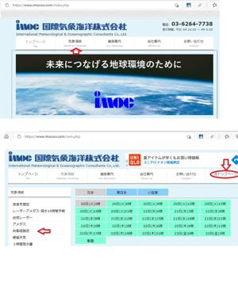
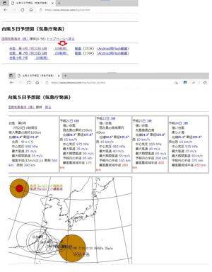
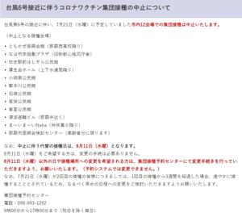

うるがいの話 ある日
最新: 台風経路予想
うるがいとは 前提知識です
カニの画像をクリックすると『うるがいの話』サイトを表示します
うるがい(ｳﾙｶﾞｲ urugai)とは、『もずくがに』の名前でとても大きくなります。
たながー（ﾀﾅｶﾞｰtanagaa）とは手長えびのことで、何種類かあり大きいのは車 エビぐらいになります。
ぶながー(bunagaa)とは、赤い髪の毛、赤い身体、そして身長は１ｍ２０ｃｍ ぐらい、川の蟹を食べているの目撃された。場所は沖縄県国頭郡大宜味村のと ある村僕の隣近所に住んでいる爺さんから、聞いた話です。
2021年07月20日 (火）
台風経路予想
17:25



おとといの台風６号発生から経路予想を知りたく、ヤフー検索で「台風経路予
想」を入力、検索一覧から「台風経路図―国際気象海洋」を選ぶ。ところが６
月の５号の情報しかでない。ん！、なんか変わった？、ヤフーの検索一覧の編
集方法が変わったのかな。おや、どうも国際気象海洋（株）のホームページの
構成が変わったためのようだ。サイトが新旧存在する、私達が職場の台風対策
会議で利用していた印刷形式は、旧サイト方式の台風経路図をクリックすると
「台風５日予想図（気象庁発表）」というページで印刷用で従来の利用してい
たものが見れた。国際気象海洋（株）のホームページの気象情報のタブを選択
台風経路図を選択しても印刷向けのページはない！。おお、・・・やがて気象
情報ページの他遷移タブの一つに旧トップページがあるに気づいた。ほほ、こ
こから印刷ができる。なるほど、ただ「台風５日予想図（気象庁発表）」検索
してみ検索一覧に載っていない。
いまのところ、直接アドレス
https://www.imocwx.com/typ5dn.htm
印刷ページを表示させなければいけない。ふむふむ、印刷形式のデザインはド
キュメントとして重宝されていると思う（多分）、そのうち改善要望の声が巷
からあがり、新しいホームページでも印刷ページが利用できるようになるであ
ろう。なぜ、そんな細かいことまで・・・、なぜなら私も同じ事をしているか
ら。それにしてもサイトのレスポンス遅い。おや！、明日はワクチン接種の予
定日だが、先ほど（１５時半）那覇市のページで台風第６号の接近に伴い、中
止となっている。え！、中止に伴う代替の接種日は、８月１１日（水曜）とあ
る。来月は遅いかな、集団接種予約センターに電話することにした。スマホで
電話するが受け付けてくれない！、固定電話を使う。つながった、電話して今
週中に変更する。受話器からかかった時間は８分４０秒間だった。